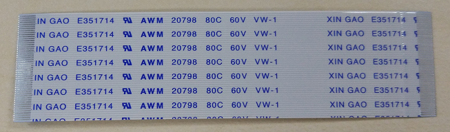
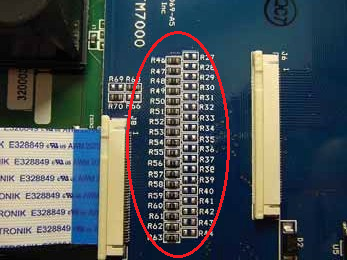
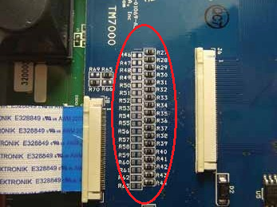
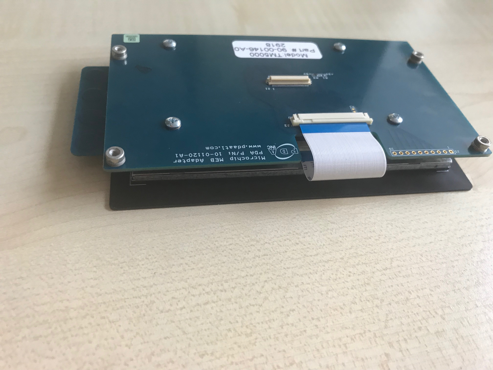
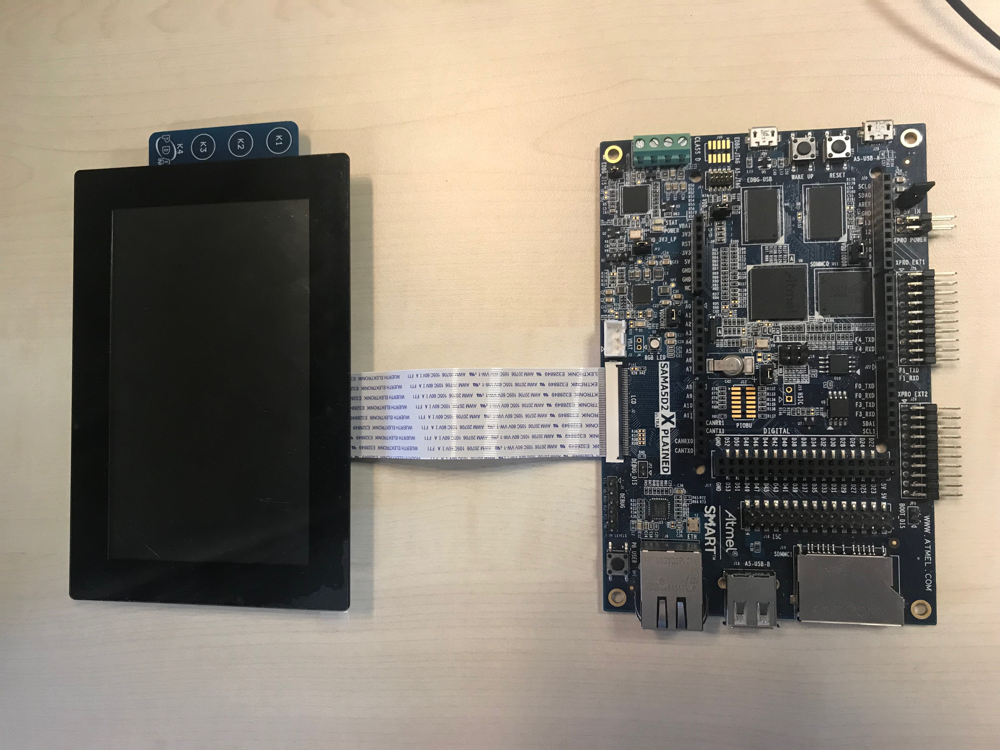
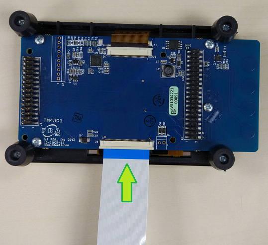
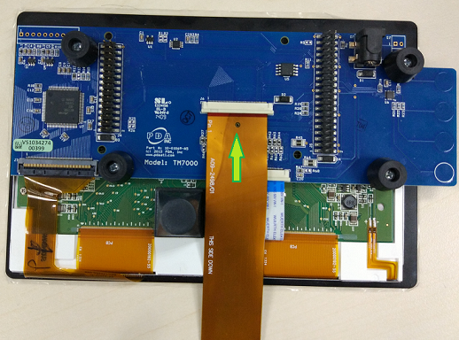
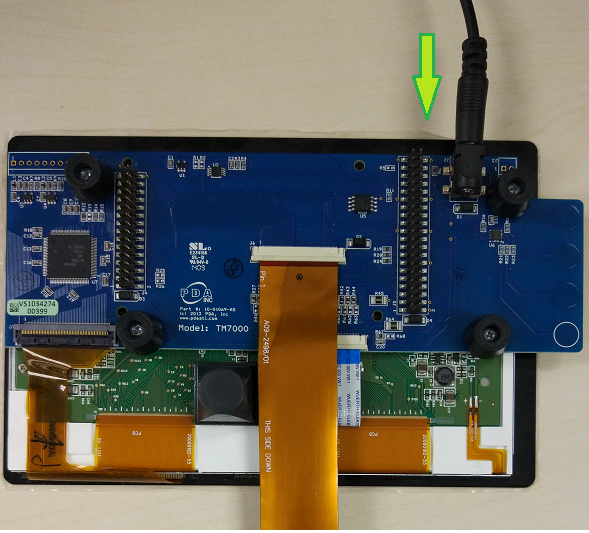
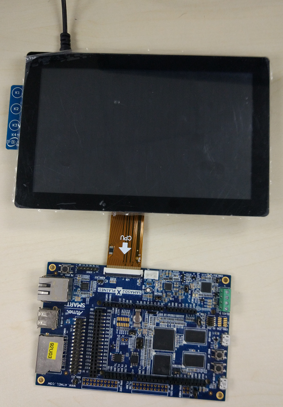
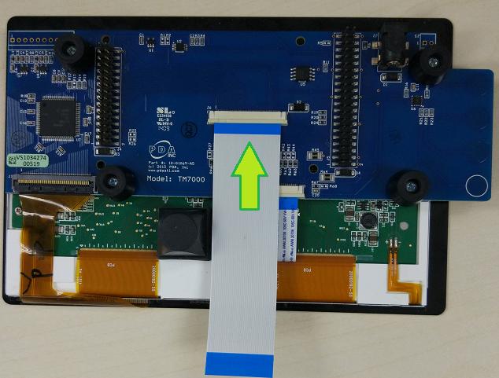

ConnectModuleFromPDA
Connection Summary
There are multiple types of display modules used on the SAMA5D2, SAMA5D3, SAMA5D4 Xplained boards , SAMA5D27 SOM1 EK , SAMA5D27 WLSOM1 EK, SAM9X60-EK : the TM5000Information for the other screens is legacy and provided as-is. We continue to provide best effort support for these screens, and keep the information on this page, but we recommend using the new TM5000 LCD screen. TM4301, TM7000 are supported in previous linux4sam releases. To get the correct color display on LCD, please use the connection in the following table.
| TM43xx / TM43xxB | TM7000 / TM7000B | TM5000 / AC320005-5 | |
|---|---|---|---|
| SAMA5D2 SOM1 EK | Directly Connected Cable | TM7000 Adaptor Cable Alternative Configuration |
Directly Connected Cable |
| SAMA5D2 WLSOM1 EK | Directly Connected Cable | TM7000 Adaptor Cable Alternative Configuration |
Directly Connected Cable |
| SAMA5D2 Xplained | Directly Connected Cable | TM7000 Adaptor Cable Alternative Configuration |
Directly Connected Cable |
| SAMA5D3 Xplained | Directly Connected Cable | Directly Connect Cable Default Configuration |
Directly Connected Cable |
| SAMA5D4 Xplained | Directly Connected Cable | TM7000 Adaptor Cable Alternative Configuration |
Directly Connected Cable |
| SAM9X60-EK | Directly Connected Cable | TM7000 Adaptor Cable Alternative Configuration |
Directly Connected Cable |
Ribbon Cable
We select one of the following ribbon cables to connect the display module to the board.- Directly Connect Cable
 - TM7000 Adaptor Cable, aka Golden Ribbon Cable.

For more details on this cable, please refer to TM7000 Adaptor Cable.
Configuration of Display Module
TM7000 has options to support two different 18 bits RGB parallel data interfaces:- Default Configuration
- The default configuration of TM7000, where R46-R63 are populated with 0R resistors, and R27-R44 are left open.
 - To be used with SAMA5D3 Xplained with the Directly Connect Cable.
- The default configuration of TM7000, where R46-R63 are populated with 0R resistors, and R27-R44 are left open.
- Alternative Configuration
- You need to change TM7000 by keep R46-R63 open, and R27-R44 are populated by 0R resistors.
 - To be used with SAMA5D2, SAMA5D4 Xplained boards and SAMA5D27 SOM1 EK SAMA5D27 WLSOM1 EK SAM9X60-EK with the TM7000 Adaptor Cable.
- You need to change TM7000 by keep R46-R63 open, and R27-R44 are populated by 0R resistors.
- Data BUS mapping and Power supply informations are available on Using Display Module TM7000 on SAMA5D4 Xplained Ultra Board

TM5000
The TM5000On SAMA5D2 Xplained Board
Please follow the following steps to connect the board and the display module.- When unboxing the TM5000, it's made of two PCBs, one holding the screen, and one adapter board attached with screws and a tiny Directly Connected Cable.

- One needs to unscrew the adapter board, and use the PCB with the screen with the included Directly Connected Cable (tiny), or another Directly Connected Cable as presented in the photo above, to connect the PDA screen to the AT91 board.
- For the stock ribbon, connect the Directly Connected Cable to the Host Interface(J1) on the TM5000. Note that connects on the cable face DOWN toward PCB.

- Connect the Directly Connect Cable to SAMA5D2 Xplained LCD Connector (J2). Note that contacts on the cable face UP away from PCB.

- Re-position the setup with the TM5000 oriented as shown below.

-
 The Directly Connected Cable that connects the screen PCB and the adapter board has the pins opened on each side for each end, not on one side for both ends, like the stock ribbon cables. This can be used, but it's different from the stock ribbon cable.
The Directly Connected Cable that connects the screen PCB and the adapter board has the pins opened on each side for each end, not on one side for both ends, like the stock ribbon cables. This can be used, but it's different from the stock ribbon cable.

On SAM9X60-EK Board
You can deduce the connection procedure from the description above or follow the link to the FAQ page on Microchip help website: SAM9X60-EK -- Attaching the TM5000 WVGA DisplayTM43xx
The TM43xx display module use a 5 VCC power supply. It has a 24-bit RGB parallel data interface, use the Directly Connect Cable to connect the board and the display module. The connection is identical for the SAMA5D2, SAMA5D3, SAMA5D4 Xplained boards and SAMA5D27 SOM1 EK SAMA5D27 WLSOM1 EK SAM9X60-EK. Here we take the SAMA5D2 Xplained board for example.On SAMA5D2 Xplained Board
Please follow the following steps to connect the board and the display module.- Connect the Directly Connected Cable to the Host Interface(J5) on the TM43xx. Note that connects on the cable face DOWN toward PCB.

- Connect the Directly Connect Cable to SAMA5D2 Xplained LCD Connector (J2). Note that contacts on the cable face UP away from PCB.
- Re-position the setup with the TM43xx oriented as shown below.

TM7000
The TM7000 and TM7000B display modules use a 3.3 VCC power supply. They have 18-bit RGB parallel data interface. The pin assignment of the RGB bus of SAMA5D2 and SAMA5D4 is different from SAMA5D3. The connection of the board and the display module is different between the SAMA5D3 and the SAMA5D2, SAMA5D4 Xplained board.On SAMA5D2/SAMA5D4 Xplained Board & SAMA5D27 SOM1 EK & SAMA5D27 WLSOM1 EK & SAM9X60-EK
The connection is identical for the SAMA5D2, SAMA5D4 Xplained boards and SAMA5D27 SOM1 EK. Here, we take the SAMA5D2 Xplained board as the example. We need to use TM7000 with the alternative configuration and the TM7000 Adaptor Cable. Please follow the following steps to connect the board and display module.- Connect the TM7000 Adaptor Cable to the Host Interface(J6) on the TM7000. Note that connects on the cable face DOWN toward PCB, and make sure that LCD written on the ribbon cable silkscreen at the back of the TM7000 connector.

- Connect the TM7000 Adaptor Cable to SAMA5D2 Xplained LCD Connector (J2). Note that contacts on the cable face UP away from PCB, you can see the ribbon cable silkscreen facing you with CPU written in front of the Xplained connector.

- Connect the AC Adapter to the TM7000 (J2).

- Re-position the setup with the TM7000 oriented as shown below.

On SAMA5D3 Xplained Board
Using TM7000 with the default configuration and the Directly Connect Cable, follow the following steps to connect the board and the display module.- Connect the Directly Connect Cable to the Host Interface(J6) on the Display Module. Note that connects on the cable face DOWN toward PCB.

- Connect the Directly Connect Cable to SAMA5D3 Xplained LCD Connector (J22). Note that contacts on the cable face UP away from PCB.

- Connect the AC Adapter to the TM7000 (J2).

- Re-position the setup with the TM7000 oriented as shown below.

| WebFaqBaseForm | |
|---|---|
| Boards | Sam9x60EK, Sama5d27WLSom1EK, Sama5d27Som1EK, Sama5d2PtcEK, Sama5d2Xplained, Sama5d4Xplained, Sama5d3Xplained |
| Components | Kernel |
| Summary | How to connect LCD module from PDA to the Boards |


| I | Attachment | Action | Size | Date | Who |
Comment |
|---|---|---|---|---|---|---|
| |
IMG-0056.JPG | manage | 1916.6 K | 2018-10-12 - 11:03 | EugenHristev | TM5000_0 |
| |
IMG-0057.JPG | manage | 2126.2 K | 2018-10-12 - 11:00 | EugenHristev | TM5000_1 |
| |
IMG-0062.JPG | manage | 1498.8 K | 2018-10-12 - 13:43 | EugenHristev | TM5000_2 |
| |
IMG-0065.JPG | manage | 2322.1 K | 2018-10-12 - 13:43 | EugenHristev | TM5000_3 |
r17 - 02 Oct 2020 - 14:15:14 - NicolasFerre

{kind=link}
{kind=link}
{kind=link}
{kind=link}
{kind=link}
{kind=link}
Copyright © by the contributing authors. All material on this collaboration platform is the property of the contributing authors.
Linux® is the registered trademark of Linus Torvalds in the U.S. and other countries.
Microchip® and others, are registered trademarks or trademarks of Microchip Technology Inc. and its subsidiaries. 
Arm® and others are registered trademarks or trademarks of Arm Limited (or its affiliates). Other terms and product names may be trademarks of others.
Ideas, requests, contributions ? Connect to LinksToCommunities page.